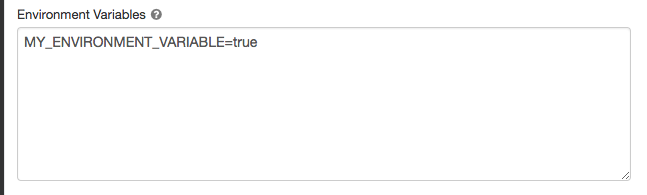

Create a cluster
This article explains the configuration options available for cluster creation in the Databricks UI. For other methods, see Clusters CLI (legacy), the Clusters API, and Databricks Terraform provider.
This article focuses on all-purpose more than job clusters, although many of the configurations and management tools described apply equally to both cluster types. To learn more about creating job clusters, see Use Databricks compute with your jobs.
Note
These instructions are for Unity Catalog enabled workspaces. For documentation on the non-Unity Catalog legacy UI, see Configure clusters.
The cluster creation UI lets you select the cluster configuration specifics, including:
The policy
The access mode, which controls the security features used when interacting with data
The runtime version
Create a new cluster
To create a new cluster, click New > Cluster in your workspace sidebar. This takes you to the New compute page, where you will select your cluster’s specifications.
Note
The configuration options you see on this page will vary depending on the policies you have access to. If you don’t see a setting in your UI, it’s because your policy does not allow you to configure that setting.
Policies
Policies are a set of rules used by admins to limit the configuration options available to users when they create a cluster. To configure a cluster according to a policy, select a policy from the Policy dropdown.
Policies have access control lists that regulate which users and groups have access to the policies.
If a user doesn’t have the unrestricted cluster creation entitlement, then they can only create clusters using their granted policies.
Personal compute policy
By default, all users have access to the Personal Compute policy, allowing them to create single-machine compute resources. If you don’t see the Personal Compute policy as an option when you create a cluster, then you haven’t been given access to the policy. Contact your workspace administrator to request access to the Personal Compute policy or an appropriate equivalent policy.
Access modes
Cluster access mode is a security feature that determines who can use a cluster and what data they can access via the cluster. When you create any cluster in Databricks, you must select an access mode.
Note
Databricks recommends that you use shared access mode for all workloads. Only use the assigned access mode if your required functionality is not supported by shared access mode.
Access Mode |
Visible to user |
UC Support |
Supported Languages |
Notes |
|---|---|---|---|---|
Single user |
Always |
Yes |
Python, SQL, Scala, R |
Can be assigned to and used by a single user. |
Shared |
Always (Premium plan or above required) |
Yes |
Python (on Databricks Runtime 11.3 LTS and above), SQL, Scala (on Unity Catalog-enabled clusters using Databricks Runtime 13.3 LTS and above) |
Can be used by multiple users with data isolation among users. |
No Isolation Shared |
Admins can hide this cluster type by enforcing user isolation in the admin settings page. |
No |
Python, SQL, Scala, R |
There is a related account-level setting for No Isolation Shared clusters. |
Custom |
Hidden (For all new clusters) |
No |
Python, SQL, Scala, R |
This option is shown only if you have existing clusters without a specified access mode. |
You can upgrade an existing cluster to meet the requirements of Unity Catalog by setting its cluster access mode to Single User or Shared.
All cluster access modes have some limitations. Clusters configured with Unity Catalog have additional limitations and differences in behavior. Structured Streaming has additional limitations on some cluster access modes. See Compute access mode limitations.
Do init scripts and libraries work with Unity Catalog access modes?
In Databricks Runtime 13.3 LTS and above, init scripts and libraries are supported on all access modes. Requirements and support vary. See Compute compatibility with libraries and init scripts.
Databricks Runtime versions
Databricks Runtime is the set of core components that run on your clusters. Select the runtime using the Databricks Runtime Version dropdown when you create or edit a cluster. For details on specific Databricks Runtime versions, see Databricks Runtime release notes versions and compatibility.
Which Databricks Runtime version should you use?
For all-purpose compute, Databricks recommends using the latest Databricks Runtime version. Using the most current version will ensure you have the latest optimizations and the most up-to-date compatibility between your code and preloaded packages.
For job clusters running operational workloads, consider using the Long Term Support (LTS) Databricks Runtime version. Using the LTS version will ensure you don’t run into compatibility issues and can thoroughly test your workload before upgrading.
For data science and machine learning use cases, consider Databricks Runtime ML version.
All Databricks Runtime versions include Apache Spark. New versions add components and updates that improve usability, performance, and security.
Enable Photon acceleration
Photon is enabled by default on clusters running Databricks Runtime 9.1 LTS and above.
To enable or disable Photon acceleration, select the Use Photon Acceleration checkbox.
Worker and driver node types
A cluster consists of one driver node and zero or more worker nodes. You can pick separate cloud provider instance types for the driver and worker nodes, although by default the driver node uses the same instance type as the worker node. Different families of instance types fit different use cases, such as memory-intensive or compute-intensive workloads.
Worker type
Databricks worker nodes run the Spark executors and other services required for proper functioning clusters. When you distribute your workload with Spark, all the distributed processing happens on worker nodes. Databricks runs one executor per worker node. Therefore, the terms executor and worker are used interchangeably in the context of the Databricks architecture.
Tip
To run a Spark job, you need at least one worker node. If a cluster has zero workers, you can run non-Spark commands on the driver node, but Spark commands will fail.
Worker node IP addresses
Databricks launches worker nodes with two private IP addresses each. The node’s primary private IP address hosts Databricks internal traffic. The secondary private IP address is used by the Spark container for intra-cluster communication. This model allows Databricks to provide isolation between multiple clusters in the same workspace.
Driver type
The driver node maintains state information of all notebooks attached to the cluster. The driver node also maintains the SparkContext, interprets all the commands you run from a notebook or a library on the cluster, and runs the Apache Spark master that coordinates with the Spark executors.
The default value of the driver node type is the same as the worker node type. You can choose a larger driver node type with more memory if you are planning to collect() a lot of data from Spark workers and analyze them in the notebook.
Tip
Since the driver node maintains all of the state information of the notebooks attached, make sure to detach unused notebooks from the driver node.
GPU instance types
For computationally challenging tasks that demand high performance, like those associated with deep learning, Databricks supports clusters accelerated with graphics processing units (GPUs). For more information, see GPU-enabled clusters.
Warning
Databricks no longer supports spinning up clusters using Amazon EC2 P2 instances.
AWS Graviton instance types
Databricks clusters support AWS Graviton instances. These instances use AWS-designed Graviton processors that are built on top of the Arm64 instruction set architecture. AWS claims that instance types with these processors have the best price-to-performance ratio of any instance type on Amazon EC2. To use Graviton instance types, select one of the available AWS Graviton instance type for the Worker type, Driver type, or both. #### Availability
Databricks supports AWS Graviton-enabled clusters:
On Databricks Runtime 9.1 LTS and above for non-Photon, and Databricks Runtime 10.2 (unsupported) and above for Photon.
In all AWS Regions. Note, however, that not all instance types are available in all Regions. If you select an instance type that is not available in the Region for a workspace, you get a cluster creation failure.
For AWS Graviton2 and Graviton3 processors.
Note
Delta Live Tables is not supported on Graviton-enabled clusters.
Enable autoscaling
When Enable autoscaling is checked, you can provide a minimum and maximum number of workers for the cluster. Databricks then chooses the appropriate number of workers required to run your job.
To set the minimum and the maximum number of workers your cluster will autoscale between, use the Min workers and Max workers fields next to the Worker type dropdown.
If you don’t enable autoscaling, you will enter a fixed number of workers in the Workers field next to the Worker type dropdown.
Note
When the cluster is running, the cluster detail page displays the number of allocated workers. You can compare number of allocated workers with the worker configuration and make adjustments as needed.
Benefits of autoscaling
With autoscaling, Databricks dynamically reallocates workers to account for the characteristics of your job. Certain parts of your pipeline may be more computationally demanding than others, and Databricks automatically adds additional workers during these phases of your job (and removes them when they’re no longer needed).
Autoscaling makes it easier to achieve high cluster utilization because you don’t need to provision the cluster to match a workload. This applies especially to workloads whose requirements change over time (like exploring a dataset during the course of a day), but it can also apply to a one-time shorter workload whose provisioning requirements are unknown. Autoscaling thus offers two advantages:
Workloads can run faster compared to a constant-sized under-provisioned cluster.
Autoscaling clusters can reduce overall costs compared to a statically-sized cluster.
Depending on the constant size of the cluster and the workload, autoscaling gives you one or both of these benefits at the same time. The cluster size can go below the minimum number of workers selected when the cloud provider terminates instances. In this case, Databricks continuously retries to re-provision instances in order to maintain the minimum number of workers.
Note
Autoscaling is not available for spark-submit jobs.
Note
Compute auto-scaling has limitations scaling down cluster size for Structured Streaming workloads. Databricks recommends using Delta Live Tables with Enhanced Autoscaling for streaming workloads. See What is Enhanced Autoscaling?.
How autoscaling behaves
Workspace in the Premium and Enterprise pricing plans use optimized autoscaling. Workspaces on the standard pricing plan use standard autoscaling.
Optimized autoscaling has the following characteristics:
Scales up from min to max in 2 steps.
Can scale down, even if the cluster is not idle, by looking at the shuffle file state.
Scales down based on a percentage of current nodes.
On job clusters, scales down if the cluster is underutilized over the last 40 seconds.
On all-purpose clusters, scales down if the cluster is underutilized over the last 150 seconds.
The
spark.databricks.aggressiveWindowDownSSpark configuration property specifies in seconds how often a cluster makes down-scaling decisions. Increasing the value causes a cluster to scale down more slowly. The maximum value is 600.
Standard autoscaling is used in standard plan workspaces. Standard autoscaling has the following characteristics:
Starts with adding 8 nodes. Then scales up exponentially, taking as many steps as required to reach the max.
Scales down when 90% of the nodes are not busy for 10 minutes and the cluster has been idle for at least 30 seconds.
Scales down exponentially, starting with 1 node.
Autoscaling with pools
If you are using an instance pool:
Make sure the cluster size requested is less than or equal to the minimum number of idle instances in the pool. If it is larger, cluster startup time will be equivalent to a cluster that doesn’t use a pool.
Make sure the maximum cluster size is less than or equal to the maximum capacity of the pool. If it is larger, the cluster creation will fail.
Autoscaling example
If you reconfigure a static cluster to be an autoscaling cluster, Databricks immediately resizes the cluster within the minimum and maximum bounds and then starts autoscaling. As an example, the following table demonstrates what happens to clusters with a certain initial size if you reconfigure a cluster to autoscale between 5 and 10 nodes.
Initial size |
Size after reconfiguration |
|---|---|
6 |
6 |
12 |
10 |
3 |
5 |
Autoscaling local storage
If you don’t want to allocate a fixed number of EBS volumes at cluster creation time, use autoscaling local storage. With autoscaling local storage, Databricks monitors the amount of free disk space available on your cluster’s Spark workers. If a worker begins to run too low on disk, Databricks automatically attaches a new EBS volume to the worker before it runs out of disk space. EBS volumes are attached up to a limit of 5 TB of total disk space per instance (including the instance’s local storage).
To configure autoscaling storage, select Enable autoscaling local storage.
The EBS volumes attached to an instance are detached only when the instance is returned to AWS. That is, EBS volumes are never detached from an instance as long as it is part of a running cluster. To scale down EBS usage, Databricks recommends using this feature in a cluster configured with autoscaling compute or automatic termination.
Note
Databricks uses Throughput Optimized HDD (st1) to extend the local storage of an instance. The default AWS capacity limit for these volumes is 20 TiB. To avoid hitting this limit, administrators should request an increase in this limit based on their usage requirements.
Automatic termination
You can also set auto termination for a cluster. During cluster creation, you can specify an inactivity period in minutes after which you want the cluster to terminate.
If the difference between the current time and the last command run on the cluster is more than the inactivity period specified, Databricks automatically terminates that cluster. For more information on cluster termination, see Terminate a cluster.
Local disk encryption
Preview
This feature is in Public Preview.
Some instance types you use to run clusters may have locally attached disks. Databricks may store shuffle data or ephemeral data on these locally attached disks. To ensure that all data at rest is encrypted for all storage types, including shuffle data that is stored temporarily on your cluster’s local disks, you can enable local disk encryption.
Important
Your workloads may run more slowly because of the performance impact of reading and writing encrypted data to and from local volumes.
When local disk encryption is enabled, Databricks generates an encryption key locally that is unique to each cluster node and is used to encrypt all data stored on local disks. The scope of the key is local to each cluster node and is destroyed along with the cluster node itself. During its lifetime, the key resides in memory for encryption and decryption and is stored encrypted on the disk.
To enable local disk encryption, you must use the Clusters API. During cluster creation or edit, set enable_local_disk_encryption to true.
Instance profiles
Note
Databricks recommends using Unity Catalog external locations to connect to S3 instead of instance profiles. Unity Catalog simplifies the security and governance of your data by providing a central place to administer and audit data access across multiple workspaces in your account. See Connect to cloud object storage using Unity Catalog.
To securely access AWS resources without using AWS keys, you can launch Databricks clusters with instance profiles. See Tutorial: Configure S3 access with an instance profile for information about how to create and configure instance profiles. Once you have created an instance profile, you select it in the Instance Profile drop-down list.
After you launch your compute, you can verify that you can access the S3 bucket using the following command. If the command succeeds, that compute resource can access the S3 bucket.
dbutils.fs.ls("s3a://<s3-bucket-name>/")
Warning
Once a cluster launches with an instance profile, anyone who has attach permissions to this cluster can access the underlying resources controlled by this role. To guard against unwanted access, you can use Cluster access control to restrict permissions to the cluster.
Cluster tags
Cluster tags allow you to easily monitor the cost of cloud resources used by various groups in your organization. You can specify tags as key-value pairs when you create a cluster, and Databricks applies these tags to cloud resources like VMs and disk volumes, as well as DBU usage reports.
For clusters launched from pools, the custom cluster tags are only applied to DBU usage reports and do not propagate to cloud resources.
For detailed information about how pool and cluster tag types work together, see Monitor usage using cluster, pool, and workspace tags
To configure cluster tags:
In the Tags section, add a key-value pair for each custom tag.
Click Add.
AWS configurations
When you configure a cluster’s AWS instance you can choose the availability zone, the max spot price, and EBS volume type. These settings are under the Advanced Options toggle in the Instances tab.
Availability zones
This setting lets you specify which availability zone (AZ) you want the cluster to use. By default, this setting is set to auto, where the AZ is automatically selected based on available IPs in the workspace subnets. Auto-AZ retries in other availability zones if AWS returns insufficient capacity errors.
Note
Auto-AZ works only at cluster startup. After the cluster launches, all the nodes stay in the original availability zone until the cluster is terminated or restarted.
Choosing a specific AZ for a cluster is useful primarily if your organization has purchased reserved instances in specific availability zones. Read more about AWS availability zones.
Spot instances
You can specify whether to use spot instances and the max spot price to use when launching spot instances as a percentage of the corresponding on-demand price. By default, the max price is 100% of the on-demand price. See AWS spot pricing.
EBS volumes
This section describes the default EBS volume settings for worker nodes, how to add shuffle volumes, and how to configure a cluster so that Databricks automatically allocates EBS volumes.
To configure EBS volumes, click the Instances tab in the cluster configuration and select an option in the EBS Volume Type dropdown list.
Default EBS volumes
Databricks provisions EBS volumes for every worker node as follows:
A 30 GB encrypted EBS instance root volume used by the host operating system and Databricks internal services.
A 150 GB encrypted EBS container root volume used by the Spark worker. This hosts Spark services and logs.
(HIPAA only) a 75 GB encrypted EBS worker log volume that stores logs for Databricks internal services.
Add EBS shuffle volumes
To add shuffle volumes, select General Purpose SSD in the EBS Volume Type dropdown list.
By default, Spark shuffle outputs go to the instance local disk. For instance types that do not have a local disk, or if you want to increase your Spark shuffle storage space, you can specify additional EBS volumes. This is particularly useful to prevent out-of-disk space errors when you run Spark jobs that produce large shuffle outputs.
Databricks encrypts these EBS volumes for both on-demand and spot instances. Read more about AWS EBS volumes.
Optionally encrypt Databricks EBS volumes with a customer-managed key
Optionally, you can encrypt cluster EBS volumes with a customer-managed key.
AWS EBS limits
Ensure that your AWS EBS limits are high enough to satisfy the runtime requirements for all workers in all clusters. For information on the default EBS limits and how to change them, see Amazon Elastic Block Store (EBS) Limits.
AWS EBS SSD volume type
You can select either gp2 or gp3 for your AWS EBS SSD volume type. To do this, see Manage SSD storage. Databricks recommends you switch to gp3 for its cost savings compared to gp2.
Note
By default, the Databricks configuration sets the gp3 volume’s IOPS and throughput IOPS to match the maximum performance of a gp2 volume with the same volume size.
For technical information about gp2 and gp3, see Amazon EBS volume types.
Spark configuration
To fine-tune Spark jobs, you can provide custom Spark configuration properties in a cluster configuration.
On the cluster configuration page, click the Advanced Options toggle.
Click the Spark tab.

In Spark config, enter the configuration properties as one key-value pair per line.
When you configure a cluster using the Clusters API, set Spark properties in the spark_conf field in the Create new cluster API or Update cluster configuration API.
To enforce Spark configurations on clusters, workspace admins can use cluster policies.
Retrieve a Spark configuration property from a secret
Databricks recommends storing sensitive information, such as passwords, in a secret instead of plaintext. To reference a secret in the Spark configuration, use the following syntax:
spark.<property-name> {{secrets/<scope-name>/<secret-name>}}
For example, to set a Spark configuration property called password to the value of the secret stored in secrets/acme_app/password:
spark.password {{secrets/acme-app/password}}
For more information, see Syntax for referencing secrets in a Spark configuration property or environment variable.
Environment variables
You can configure custom environment variables that you can access from init scripts running on a cluster. Databricks also provides predefined environment variables that you can use in init scripts. You cannot override these predefined environment variables.
On the cluster configuration page, click the Advanced Options toggle.
Click the Spark tab.
Set the environment variables in the Environment Variables field.

You can also set environment variables using the spark_env_vars field in the Create new cluster API or Update cluster configuration API.
Cluster log delivery
When you create a cluster, you can specify a location to deliver the logs for the Spark driver node, worker nodes, and events. Logs are delivered every five minutes and archived hourly in your chosen destination. When a cluster is terminated, Databricks guarantees to deliver all logs generated up until the cluster was terminated.
The destination of the logs depends on the cluster ID. If the specified destination is
dbfs:/cluster-log-delivery, cluster logs for 0630-191345-leap375 are delivered to
dbfs:/cluster-log-delivery/0630-191345-leap375.
To configure the log delivery location:
On the cluster configuration page, click the Advanced Options toggle.
Click the Logging tab.
Select a destination type.
Enter the cluster log path.
S3 bucket destinations
If you choose an S3 destination, you must configure the cluster with an instance profile that can access the bucket.
This instance profile must have both the PutObject and PutObjectAcl permissions. An example instance profile
has been included for your convenience. See Tutorial: Configure S3 access with an instance profile for instructions on how to set up an instance profile.
{
"Version": "2012-10-17",
"Statement": [
{
"Effect": "Allow",
"Action": [
"s3:ListBucket"
],
"Resource": [
"arn:aws:s3:::<my-s3-bucket>"
]
},
{
"Effect": "Allow",
"Action": [
"s3:PutObject",
"s3:PutObjectAcl",
"s3:GetObject",
"s3:DeleteObject"
],
"Resource": [
"arn:aws:s3:::<my-s3-bucket>/*"
]
}
]
}
Note
This feature is also available in the REST API. See the Clusters API.